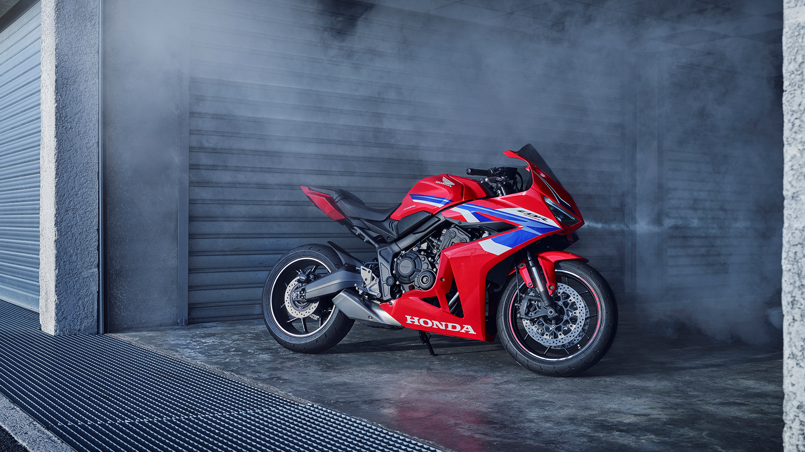

DOS RUEDAS
CBR650R
Cuatro cilindros y tecnología E-Clutch.
Explorar la moto →Deportividad, mecánica e ingeniería Honda.
HONDAPULSE · MOTOR Y TECNOLOGÍA
Dos Modelos. Dos tecnologías. Descubre qué hay detrás.
Explorar modelosLOS PROTAGONISTAS
MÁS ALLÁ DEL DISEÑO